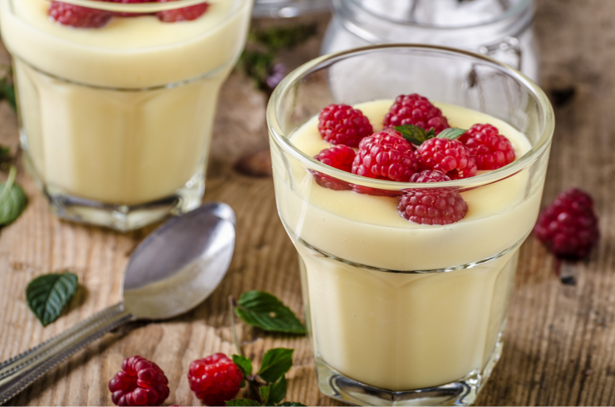

🏠 Home
Custard pudding

Description:
Custard pudding a creamy and simple dessert, often prepared by cooking the custard mix with milk and sugar until thickened. Can be served plain or topped with fruits, whipped cream, or chocolate shavings.
Ingredients:
- 500 ml of milk
- 1 packet of vanilla pudding mix
- 1 cup of millet groats
- 2 tablespoons of maple syrup
Steps:
- Dissolve the pudding mix in 125 ml of milk, stirring to ensure no large lumps remain.
- Bring the remaining milk to a boil in a larger pot and add the prepared pudding mixture. Wait until the mixture thickens and stir well.
- Cook the millet groats, then blend them together with the prepared pudding and maple syrup until smooth.
- Pour the pudding into serving glasses and have fun with the toppings! You can sprinkle the dessert with nuts or coconut flakes. The pudding will also taste better with whipped cream or melted chocolate.